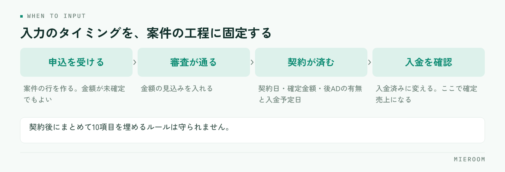

月末の売上集計に半日かかる。その原因は集計作業の遅さではなく、数字を入力し始めるのが月末だからです。集計を自動化するというのは、計算式を組むことではなく、日々の業務の中で数字が埋まっていく仕組みに変えることを指します。この記事では、その順番を整理します。
この記事の結論
月末集計の自動化は、計算の仕組みより先に「何を」「いつ」「誰の」売上として記録するかを決めることから始まります。この3つが決まっていない限り、どんな仕組みを入れても月末の確認作業は残ります。
月末に時間がかかる本当の理由
月末の集計作業を分解すると、実際に計算している時間はごくわずかです。大半を占めているのは、数字を探して集める時間と、合わない金額を確かめる時間です。
契約書のファイルを開いて金額を拾い、通帳の入金と突き合わせ、担当者に「この案件の後ADはいつ入る予定か」と聞いて回る。この工程が月末に集中するのは、契約が終わった時点で記録が止まっているからです。案件が動いている最中に数字が残っていれば、月末にやることは確認だけになります。月末の作業そのものの減らし方は月末集計に半日。「数字まとめ地獄」から抜け出す方法でも扱っています。
もうひとつの理由は、月末まで数字が誰にも見えないことです。数字が出るのが翌月になってからでは、対策を打てる時期を過ぎています。月末の集計を軽くする目的は、作業時間の短縮そのものではなく、判断できるタイミングを前に動かすことにあります。
自動化の前に決める3つの取り決め
仕組みを入れる前に、店舗として言葉の定義を揃えます。ここが曖昧なままだと、集計結果が人によって変わり、確認作業がいつまでも残ります。
1つ目は「何を売上とするか」です。仲介手数料だけを指すのか、広告料（AD）や事務手数料、付帯サービスの紹介料まで含むのか。項目ごとに分けて記録するのか合算するのかも決めます。
2つ目は「いつ計上するか」です。契約日で立てるのか、入金日で立てるのか。賃貸仲介では契約から入金までに間が空くため、ここを決めないと同じ案件が月をまたいで二重に数えられます。
3つ目は「誰の売上か」です。反響を取った担当者と、内見に行った担当者と、契約をまとめた担当者が違う案件をどう扱うか。按分するのか、主担当1人に寄せるのか、あらかじめ決めておきます。
| 決めること | 決めないと起きること |
|---|---|
| 何を売上とするか | 人によって集計範囲が違い、数字が合わない |
| いつ計上するか | 契約月と入金月で二重に数えられる |
| 誰の売上か | 担当別の成績が実態と食い違い、評価に使えない |
確定した売上と、見込みを分ける
賃貸仲介の数字が読みにくい最大の理由は、契約したからといって入金が済んでいるとは限らないことです。とくに後ADは、契約から入金まで間が空きます。
ここを分けずに1つの数字として見ていると、月の数字は良いのに資金が苦しい、という状態が起きます。管理表の中で、確定した売上（入金済み）と、見込み（契約済み・未入金）を必ず別の列として持たせてください。
分けておけば、月末に見るべきものが2つになります。ひとつは今月確定した売上。もうひとつは、予定日を過ぎても入金されていない案件です。後者は放っておくと誰も気づかないまま流れていきます。後ADの記録の持たせ方は後ADの未入金を防ぐ管理表の作り方で詳しく扱っています。
毎日埋まる形にするための入力ルール
数字が月末に集中しないようにするには、入力のタイミングを業務の流れの中に固定します。担当者が「あとでまとめて入れよう」と思った時点で、月末集計は復活します。

- 申込を受けた時点で案件の行を作る。この時点では金額が未確定でも構いません
- 審査が通った時点で金額の見込みを入れる
- 契約が済んだ時点で契約日と確定金額、後ADの有無と入金予定日を入れる
- 入金を確認した時点で入金済みに変える
大事なのは、1回の入力を軽くすることです。契約後にまとめて10項目を埋めるルールは守られません。工程ごとに2〜3項目ずつなら、業務の流れを止めずに続けられます。
申込の行があるのに契約日が空欄のまま2週間経っている案件、契約済みなのに入金予定日が空欄の案件。この2つを週1回抽出するだけで、入力漏れはほぼ拾えます。
店舗別・担当別に分けて見る
集計の目的は合計金額を出すことではなく、どこが動いていてどこが止まっているかを見ることです。そのためには、合計を分解できる形で記録しておく必要があります。
店舗別に見るときは、単月の金額だけでなく、前年の同じ月と並べます。賃貸仲介は繁忙期と閑散期の差が大きいため、前月比では判断を誤ります。
担当別に見るときは、売上金額だけを並べないでください。反響の割り振り数が違えば、金額の差は本人の力量の差とは限りません。接客数と並べて初めて、指導すべき内容が見えます。担当者別の数字の読み方はスタッフの成績を数字で見る方法にまとめています。
分けて見られる状態にしておくと、月末の会議で「今月は良かった／悪かった」で終わらず、どの工程に手を入れるかまで話が進みます。
Excelで組むときに超えられない壁
ここまでの内容は、Excelでも組めます。実際、多くの店舗がExcelから始めます。ただし、続けていくと必ず次の3つに当たります。
ひとつ目は、同時に開けないことです。複数人が同じ時間に入力する運用になった時点で、ファイルの取り合いが起きます。順番待ちが発生すると、入力は後回しにされます。
ふたつ目は、ファイルが分かれていくことです。月別・店舗別にファイルが増え、年間で集計しようとすると結局コピーと貼り付けが必要になります。
みっつ目は、入力の制約をかけにくいことです。日付の形式がバラバラ、担当者名が表記揺れ、金額欄に文字が入っている。こうした汚れが積もると、集計の前にデータを直す作業が発生します。
Excelでの限界についてはExcel管理からの卒業も合わせてご覧ください。判断の目安はシンプルで、入力する人が2人を超え、月をまたいで数字を追いたくなったときが切り替えどきです。
集計の自動化は、繁忙期の前と後、どちらで始めるべきですか？
過去のExcelデータは引き継げますか？
担当者に入力を徹底させるにはどうすればいいですか？
まとめ：集計を軽くする鍵は、入力の設計にある
月末の売上集計を自動化するというのは、月末に速く計算することではありません。契約が動いている最中に数字が埋まり、月末には確認だけが残る状態を作ることです。そのためにまず、何を・いつ・誰の売上とするかを決め、確定と見込みを分け、入力のタイミングを工程に固定してください。ここが決まっていれば、道具はExcelでも仕組みでも構いません。
入力する人が増え、店舗別・担当別の数字を毎日見たい段階になったら、専用の仕組みに移す時期です。ミエルームは賃貸仲介の申込・入金・売上を1か所で管理し、確定売上と見込みを分けたまま日々の数字を確認できます。ミエルームのサービス内容をご覧いただき、実際の画面で試したい場合はデモアカウントを発行しますので、お気軽にご相談ください。最短即日でご利用を開始いただけます。